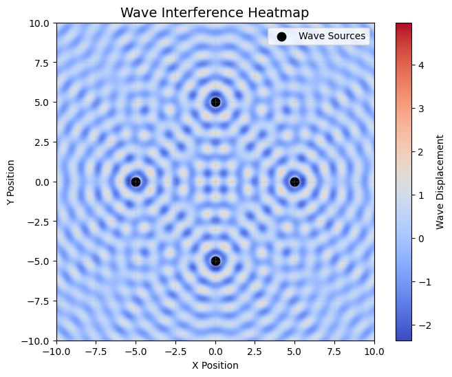

🌊 Interference Patterns on a Water Surface
🎯 Motivation
Interference occurs when waves from different sources meet and overlap. On a water surface, we can clearly see these effects when ripples from different points intersect. The resulting pattern helps us understand how waves reinforce or cancel each other out.
Studying these patterns:
- Makes wave physics visual and intuitive
- Helps us learn about wave phase, superposition, and wave behavior
- Can be used in real-world applications like acoustics, optics, and engineering
📌 Problem Statement
We want to simulate the interference pattern formed by multiple point wave sources placed at the corners of a regular polygon (like a square or triangle).
Each source creates circular waves that spread across a surface. At each point on the surface, we’ll calculate the combined wave effect from all the sources using wave equations and superposition.
📐 Formula for a Circular Wave
To calculate the wave height (displacement) at any point on the surface, use:
Where:
- \(A\) is the wave amplitude
- \(r_i = \sqrt{(x - x_i)^2 + (y - y_i)^2}\) is the distance from point \((x, y)\) to the source at \((x_i, y_i)\)
- \(k = \frac{2\pi}{\lambda}\) is the wave number (related to wavelength \(\lambda\))
- \(\omega = 2\pi f\) is the angular frequency (related to frequency \(f\))
- \(\phi\) is the wave’s initial phase
- \(t\) is time
🔗 Superposition: Adding the Waves Together
To find the total wave height at any point on the grid, we add the contributions from all sources:
Where:
- \(\eta(x, y, t)\) is the displacement of the water surface at point \((x, y)\) and time \(t\),
- \(A\) is the amplitude of the wave,
- \(k = \frac{2\pi}{\lambda}\) is the wave number, related to the wavelength \(\lambda\),
- \(\omega = 2\pi f\) is the angular frequency, related to the frequency \(f\),
- \(r = \sqrt{x^2 + y^2}\) is the distance from the source to the point \((x, y)\),
- \(\phi\) is the initial phase of the wave.
6. Visualize
We'll use Python + Matplotlib to simulate and visualize the interference.
🧪 Python Simulation
import numpy as np
import matplotlib.pyplot as plt
# 🌊 Wave Parameters
A = 1 # Amplitude of the wave
lambda_ = 1 # Wavelength (distance between peaks)
f = 1 # Frequency (how many waves per second)
omega = 2 * np.pi * f # Angular frequency
k = 2 * np.pi / lambda_ # Wave number
phi = 0 # Initial phase (same for all waves)
# 📐 Polygon Parameters
radius = 5 # Distance from the center to each source (polygon size)
num_sources = 4 # Number of wave sources (e.g., 4 for a square)
grid_size = 200 # Resolution of the grid for the water surface visualization
# 🎯 Create a Grid for the Water Surface
x = np.linspace(-10, 10, grid_size) # X-axis range
y = np.linspace(-10, 10, grid_size) # Y-axis range
X, Y = np.meshgrid(x, y) # Creating a mesh grid for the surface
# 📍 Source Positions (Placed at the Vertices of a Regular Polygon)
theta = np.linspace(0, 2 * np.pi, num_sources, endpoint=False) # Angle positions of the sources
source_x = radius * np.cos(theta) # X coordinates of sources
source_y = radius * np.sin(theta) # Y coordinates of sources
# ⏰ Time Snapshot (Static pattern)
t = 0 # Fixed time to visualize the pattern
# 🌊 Wave Function - Describes the wave at a given point (X, Y)
def wave(x, y, sx, sy):
r = np.sqrt((x - sx)**2 + (y - sy)**2) # Distance from source to the point
return A * np.cos(k * r - omega * t + phi) # Wave equation: displacement based on distance
# 🌊 Total Wave from All Sources (Superposition Principle)
total = np.zeros_like(X) # Initialize the grid for total displacement
for i in range(num_sources):
total += wave(X, Y, source_x[i], source_y[i]) # Adding waves from all sources
# 🌈 Heatmap Visualization of the Interference Pattern
plt.figure(figsize=(8, 6))
plt.imshow(total, extent=[-10, 10, -10, 10], cmap='coolwarm', origin='lower') # Heatmap of wave displacement
plt.colorbar(label='Wave Displacement') # Color bar to show the displacement range
plt.scatter(source_x, source_y, color='yellow', edgecolors='black', s=100, label='Sources') # Mark sources
plt.title("Interference Pattern (Heatmap)", fontsize=14) # Plot title
plt.xlabel("X Position") # X-axis label
plt.ylabel("Y Position") # Y-axis label
plt.grid(True, linestyle='--', alpha=0.3) # Grid with dashed lines
plt.legend() # Display the legend
plt.show()
# 🌀 Contour Plot of Wave Interference (Show regions of constructive/destructive interference)
plt.figure(figsize=(8, 6))
plt.contour(X, Y, total, levels=20, cmap='plasma') # Contour plot with wave levels
plt.scatter(source_x, source_y, color='yellow', edgecolors='black', s=100) # Mark sources
plt.title("Contour Lines of Wave Interference", fontsize=14) # Plot title
plt.xlabel("X Position") # X-axis label
plt.ylabel("Y Position") # Y-axis label
plt.grid(True, linestyle='--', alpha=0.3) # Grid with dashed lines
plt.show()
